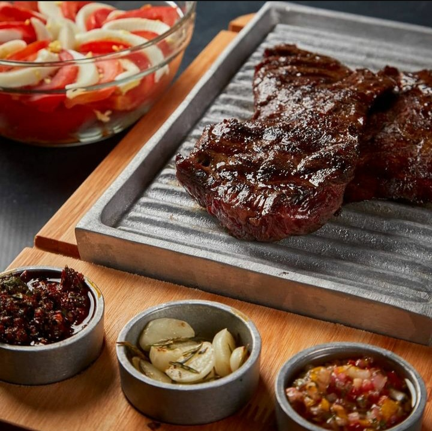
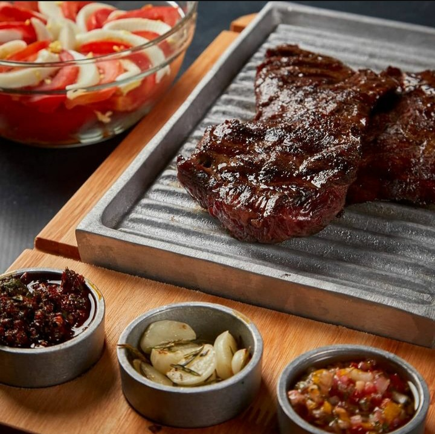

Parrilla Argentina de estilo bodegón
La casa del Asador
Con la experiencia de crear la mejor parrilla porteña, La Casa del Asador los invita a disfrutar de la excelencia de las carnes argentinas a la parrilla, donde la pasión por la carne se combina con un ambiente acogedor y un servicio excepcional
En nuestro restaurante, nos dedicamos a brindar una experiencia culinaria única para los amantes de la carne a la parrilla. Nuestro enfoque principal es resaltar los sabores naturales de las mejores selecciones de carne, que cuidadosamente seleccionamos de proveedores locales y de confianza. Cada corte se prepara con maestría y se cocina a la perfección para satisfacer hasta los paladares más exigentes.
o solo nos preocupamos por la carne, sino también por crear una experiencia completa para nuestros comensales. Nuestro cálido y acogedor ambiente te invita a relajarte y disfrutar de una comida inolvidable en compañía de amigos y seres queridos. Nuestro personal amable y atento se asegurará de que tu visita sea cómoda y satisfactoria en todo momento.
Además de nuestras deliciosas opciones de parrilla, ofrecemos una variedad de acompañamientos y guarniciones cuidadosamente elaborados para complementar tu elección de carne. Desde frescas ensaladas hasta exquisitas opciones vegetarianas, nuestro menú tiene algo para todos los gustos.
Ya sea que estés buscando una celebración especial o simplemente una comida informal, nuestro restaurante de parrilla es el lugar perfecto para disfrutar de una experiencia gastronómica excepcional. Te invitamos a unirte a nosotros y descubrir la pasión y el sabor de la parrilla en su máxima expresión.
 
